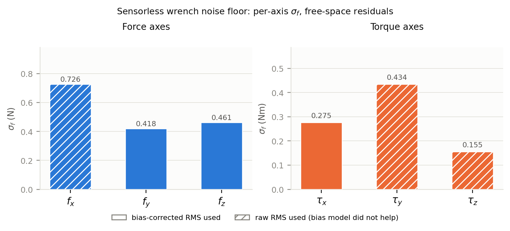
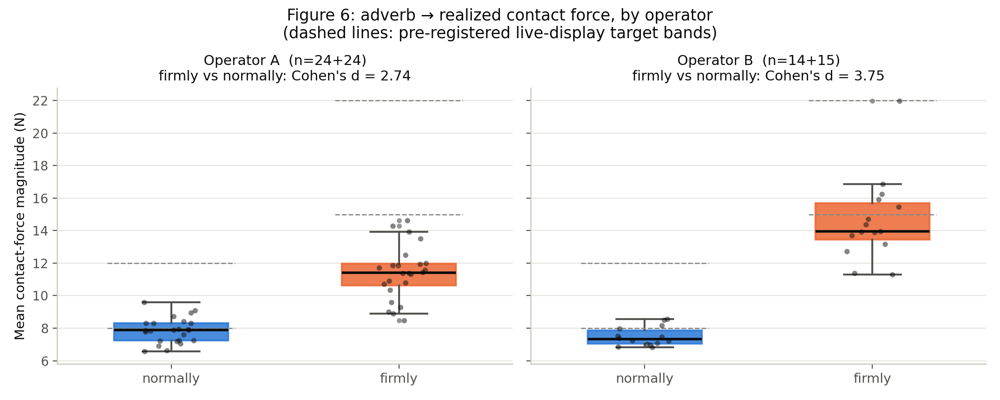

Contact-rich manipulation — wiping, insertion, assembly — requires a robot to modulate how hard it pushes, not only where it goes: compliance is as much an action as pose is. A growing wave of vision-language-action (VLA) policies injects contact force as an input observation, but far fewer predict compliance as an output, and the ones that do rely on privileged simulated contact state or a hand-specified task structure. This is not an oversight; it is forced by the interface. Every popular teleoperation channel for collecting VLA demonstrations — VR controllers, a SpaceMouse, a handheld UMI gripper — records only where the operator moved the robot, never what stiffness they intended it to have.
We show this is an identifiability problem, not a data-scale one. Given only the measured follower pose and the measured contact wrench, a standard diagonal impedance law has two unknowns per axis and one observed equation, at every timestep, for every demonstration a pose-only interface has ever recorded. We resolve it with an interface property, not a modeling trick: four-channel bilateral teleoperation already exchanges position and force between a leader and a follower arm, and the leader pose is a physical measurement of what the operator commanded as the equilibrium. Substituting this for the unknown equilibrium collapses the ambiguity and makes per-timestep, anisotropic stiffness identifiable by regression, using only the manipulator's own joint-torque sensing — no dedicated force/torque or tactile sensor, at training or inference time.
Applied to real bilateral wiping demonstrations, our identifiability mask retains 64.2–95.0% of in-contact timesteps across all six wrench axes, with measured per-axis noise floors well below the labels' working range. A learned stiffness predictor beats a constant-value baseline on a held-out, cross-operator split, rejecting the null hypothesis that the extracted labels are noise. Trained on these labels, a compliance-output VLA policy [PLACEHOLDER — insert final real-robot policy result here: e.g. success rate or task metric for the compliance-output policy (B5) vs. a fixed-stiffness position-output baseline (B0), a force-as-input baseline (B2), and an oracle constant-stiffness baseline (B1)] . Because the extraction method consumes only signals every four-channel bilateral rig already logs, it applies unchanged to any existing or future bilateral-teleoperation dataset: every such dataset already contains an identifiable compliance signal that this method can recover without new data collection.
A diagonal impedance law relates the contact wrench to a tracking error between a commanded equilibrium pose and the measured follower pose. Given only the follower pose and the measured wrench, this is unidentifiable: for any positive stiffness, a compatible equilibrium exists that reproduces the observed force exactly. Four-channel bilateral teleoperation breaks the ambiguity because the leader pose is itself an independent, physically measured proxy for the operator's intended equilibrium. Substituting it in makes the tracking error directly observed, and stiffness and damping become identifiable by windowed regression, subject to an excitation and noise-floor validity mask that excludes (rather than imputes) timesteps where the regression is not well-conditioned.
Applied to the full wiping-task dataset, the identifiability mask retains 64.2–95.0% of in-contact timesteps across all six wrench axes — every axis clears a 25% floor by a wide margin. The measured per-axis noise floor is comfortably below the labels' working range on every axis.

A learned stiffness predictor improves on a constant-value baseline by 1.058× in aggregate RMSE on a held-out, cross-operator split (3 of 6 axes individually beat the constant predictor), rejecting the null hypothesis that the extracted labels are pure noise — the necessary precondition for training a policy on them. Reported honestly per-axis rather than smoothed into a single number.

As a secondary validity check (not a language-generalization claim), realized contact-force magnitude separates cleanly by commanded manner ("normally" vs. "firmly") within each operator, evidence that the extracted labels track an independently verifiable human intent rather than noise.

./static/videos/ (e.g.
rollout_b5.mp4, rollout_b0.mp4), then swap them in for
the placeholder boxes underneath.
| Policy | Description | Result |
|---|---|---|
| B0 | Position-output VLA, fixed high stiffness | [ADD] |
| B1 | Oracle constant-stiffness | [ADD] |
| B2 | Force-as-input VLA | [ADD] |
| B5 (ours) | Compliance-output VLA | [ADD] |
@inproceedings{anonymous2027compliance,
title = {Compliance is an Action: Distilling Human Impedance from Bilateral
Demonstrations into Vision-Language-Action Policies},
author = {Anonymous Author(s)},
booktitle = {Under review, IEEE International Conference on Robotics and
Automation (ICRA)},
year = {2027},
note = {Anonymized for double-blind review}
}